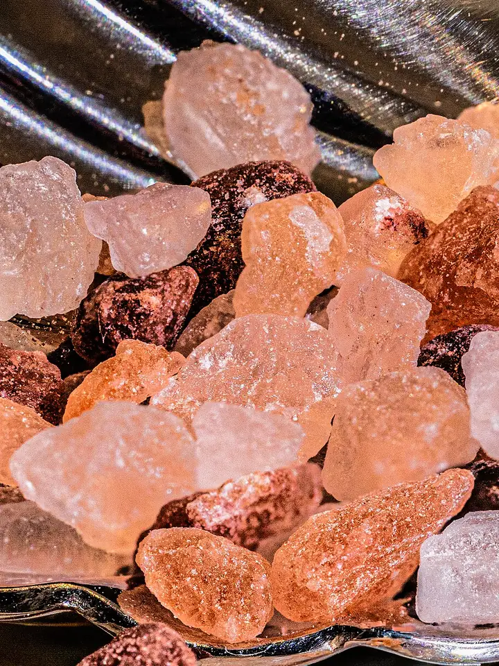
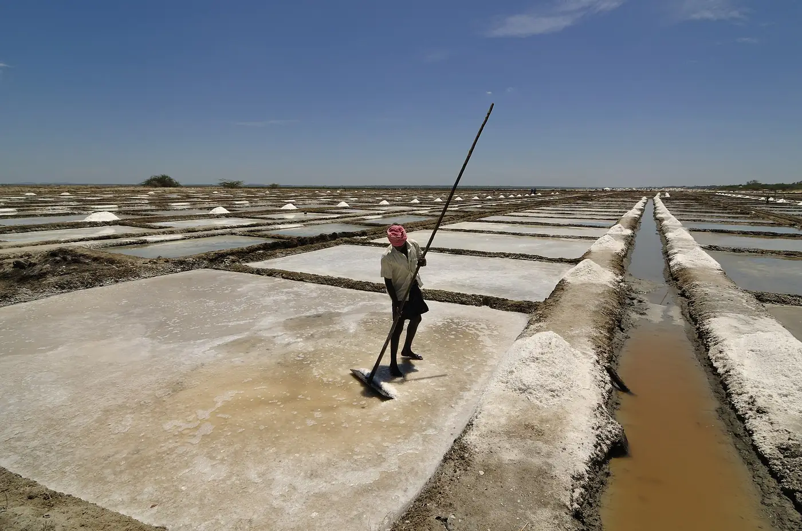

Crystal sea salt · Concept
Raked at low tide.
Blush salt crystals, grown slowly in shallow brine pans and raked by hand. Scroll and the jar opens.

01 · The crystal
Coarse, clear, loud.
Each crystal grows slowly in the shallow pans, so it stays big, clear and crunchy. The faint blush comes from the brine itself, not from anything added.
- 01 · Crunch
A coarse crystal cracks between the teeth instead of dissolving straight away.
- 02 · Finish
Scatter it last, on tomatoes, on chocolate, on a fried egg.
- 03 · Pinch
Big crystals are easy to see, so you salt less and taste more.
02 · The jar
A jar you leave out.
Clear so you can see how much is left, wide so your fingers fit, heavy enough to stay put next to the stove.
- Contents
- Crystal sea salt, hand raked
- Glass
- Clear soda-lime, wide mouth so fingers fit
- Lid
- Stoneware, coral glaze, cork seal
- Sizes
- 90 g jar, 180 g jar, 500 g refill pouch
- Keeps
- Dry and loose for two years in the jar
- Made
- Fictional brand, concept only
03 · Harvest
Sun, wind, a rake.

- 01
Let the tide in
Sea water is let into shallow clay beds on a spring tide and left to the sun and wind.
- 02
Wait for the crust
As the brine warms and thickens, crystals grow slowly along the bottom and edges of the pan.
- 03
Rake it by hand
The crystals are raked into low heaps at the edge of the pan, then dried in moving air.
04 · Order
Put a jar on the table.
Pick a size and how many. This is a concept, so the form works but nothing leaves this page.